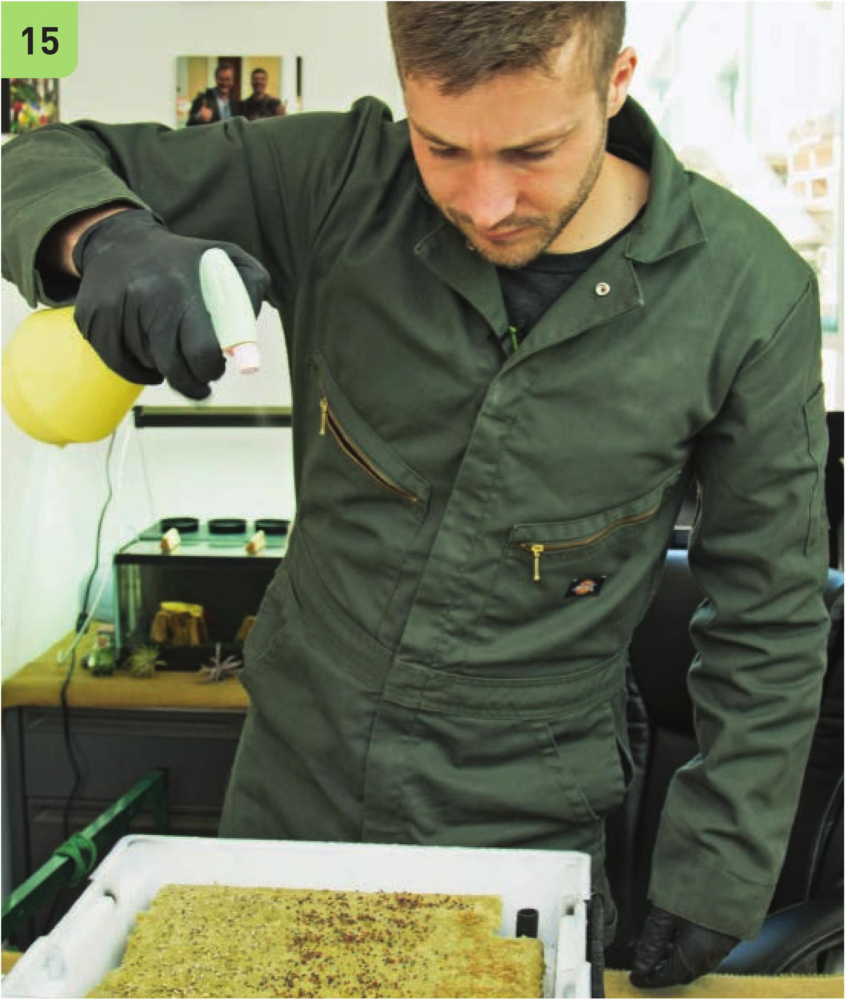
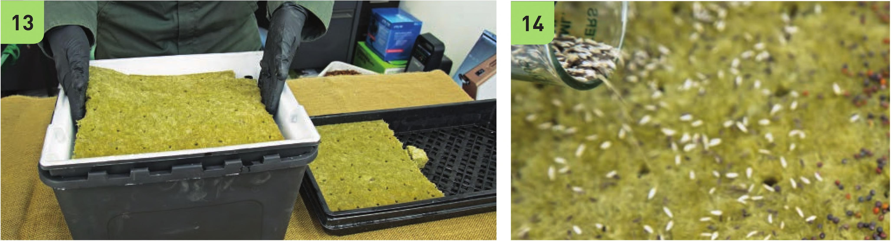

Planting and Harvesting Microgreens 12 Prepare the stone wool by rinsing it in nutrient solution. 13 Remove plugs as needed for the stone wool sheet to fit the grow bed. 14 See the Microgreen Crop Chart in the appendix for recommended seeding rates. Some microgreen seed packets will provide a recommended seeding density. 15 Gently mist the microgreen seeds. Misting the seeds twice daily for the first 3 to 5 days will help germination. 16 Most microgreens are ready to harvest after 10 to 15 days. Some varieties are slower growing and require 3 to 4 weeks before they are ready to harvest. 17 Many microgreen varieties can be harvested multiple times. Cut the young plants above their lowermost leaves to give them an opportunity to regrow.


